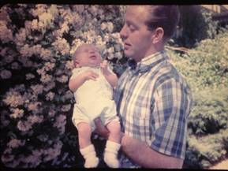

Chapter 19 – MICHAEL KEN BROWNING
Mike was born April 28th. My good friends in Ogden had me come back to Ogden and they gave me a baby shower. That was special of them. We loved our precious little girls, but were excited to have a boy. Mike had red hair. We had wanted to name him David, but when Ken's mom heard that, she said "why would you name a poor little child David?" She obviously didn't like the name of David. My mom came to the hospital when Mike was born and asked what we were going to name him. I told her we didn't know - that we had planned to name him David, but Ken's mom didn't like that name. My mom said "he looks like a Michael to me. Why don't you name him Michael Ken?" I liked that name and so did Ken - so that's how Mike got his name. Mike had colic, but nothing like Sandi's. He had problems with his feet and the doctor suggested we put him in corrective shoes. Then he added, "or you could buy cowboy boots for him to wear and that would do the same thing." We decided on the boots. We also bought him western clothes, play guns & holster and cowboy hat. He looked so cute as a little redheaded cowboy. Mike was a "mama's boy" and was really demanding - so I really had my hands full with my three children. Sandi was 8, Shellie was 3 and Mike one year old when Ken was put in the bishopric in the Clearfield 1st ward. He was first counselor to Bishop Kent Murdock. It was hard for me to wrestle all three, although Sandi was good, and with her being older, she was able to help me with the younger two.